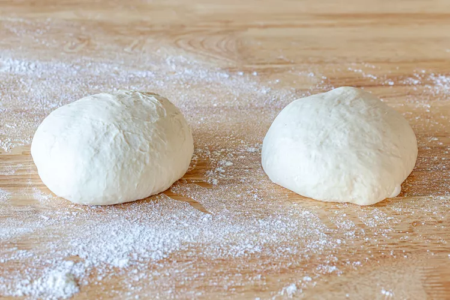
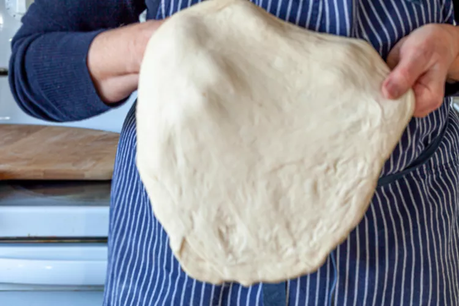
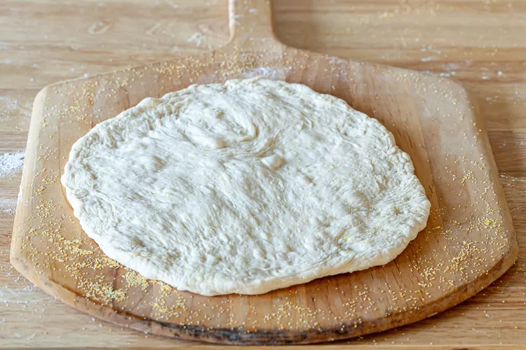
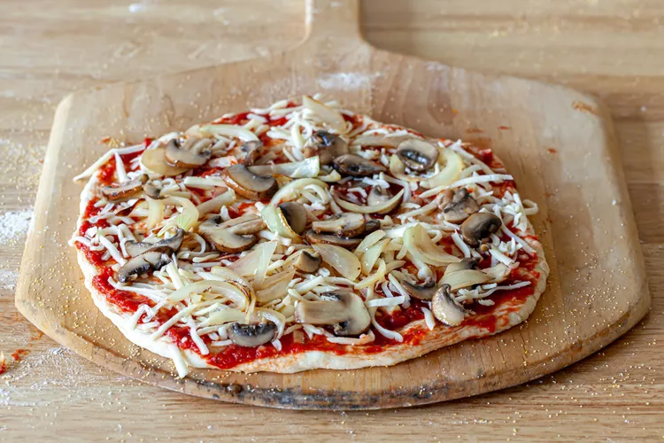
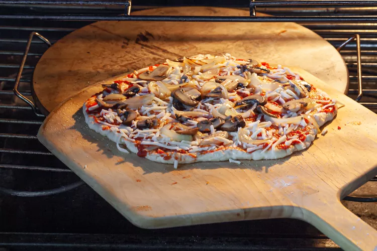

Pizza

Description
Making homemade pizza dough can sound like a lot of work, but it’s so worth
the bragging rights. The dough itself requires few ingredients and just a little
bit of rising and rest time. While you wait for the dough to be ready,
you can get to work prepping your tomato sauce, chopping fresh vegetables,
or grating the cheese you’ll put on top. Bake for 15 minutes,
garnish with basil (or, let’s be real, more cheese),
and enjoy showing off your way-better-than-takeout creation.
Ingredients
For the dough
- 1 1/2 cups (355 ml) warm water (105°F-115°F)
- 1 package (2 1/4 teaspoons) active dry yeast
- 3 3/4 cups (490g) bread flour
- 2 tablespoons extra virgin olive oil (omit if cooking pizza in a wood-fired pizza oven)
- 2 teaspoons kosher salt
- 1 teaspoon sugar
For making Pizza and toppings
- Extra virgin olive oil
- Cornmeal (to help slide the pizza onto the pizza stone)
- Tomato sauce (smooth or pureed)
- Firm mozzarella cheese, grated
- Fresh soft mozzarella cheese, separated into small clumps
- Fontina cheese, grated
- Parmesan cheese, grated
- Feta cheese, crumbled
- Mushrooms, very thinly sliced if raw, otherwise first sautéed
- Bell peppers, stems and seeds removed, very thinly sliced
- Italian pepperoncini, thinly sliced
- Italian sausage, cooked ahead and crumbled
- Sliced black olives
- Chopped fresh basil
- Baby arugula, tossed in a little olive oil, added as pizza comes out of the oven
- Pesto
- Pepperoni, thinly sliced
- Onions, thinly sliced raw or caramelized
- Ham, thinly sliced
Steps
- Preheat the pizza stone (or pizza pan or baking sheet)
- Divide the dough into 2 balls:

- Prep the toppings:
- Flatten the dough ball, and stretch out into a round:

- Brush the dough top with olive oil:
- Sprinkle the pizza peel with cornmeal, put flattened dough on top:

- Spread with tomato sauce and sprinkle with toppings:

- Slide pizza into the oven:

- Bake